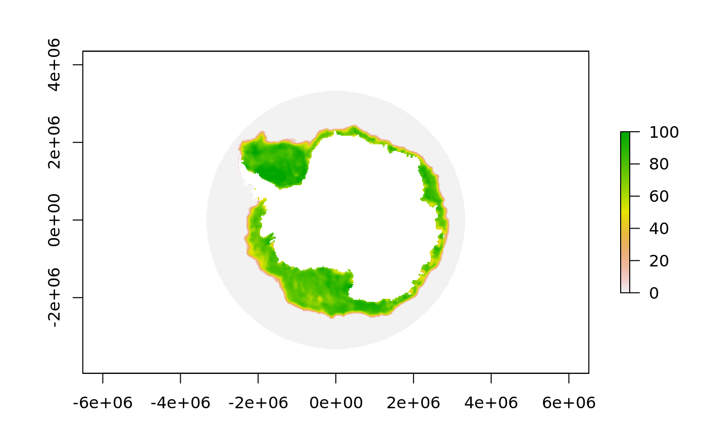
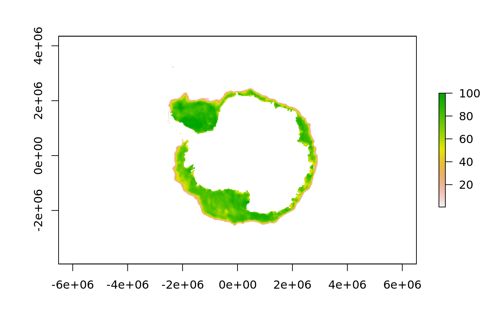

latmask.RdMask out values based on latitude for a raster. This works by finding all cells at
latitudes less than latitude and setting them to missing. If southern = FALSE
the inequality is reversed, and all cells at latitudes greater than latitude are
masked out.
latmask(x, latitude = 0, southern = TRUE, trim = FALSE, ...)
| x | a raster layer |
|---|---|
| latitude | maximum latitude (effectively a minimum latitude if |
| southern | flag for whether south-polar context is used, default is |
| trim | if |
| ... | ignored currently |
RasterLayer
The trim option allows for the result to be reduced to the common bounding box
within which any row or column has a non-missing value.
